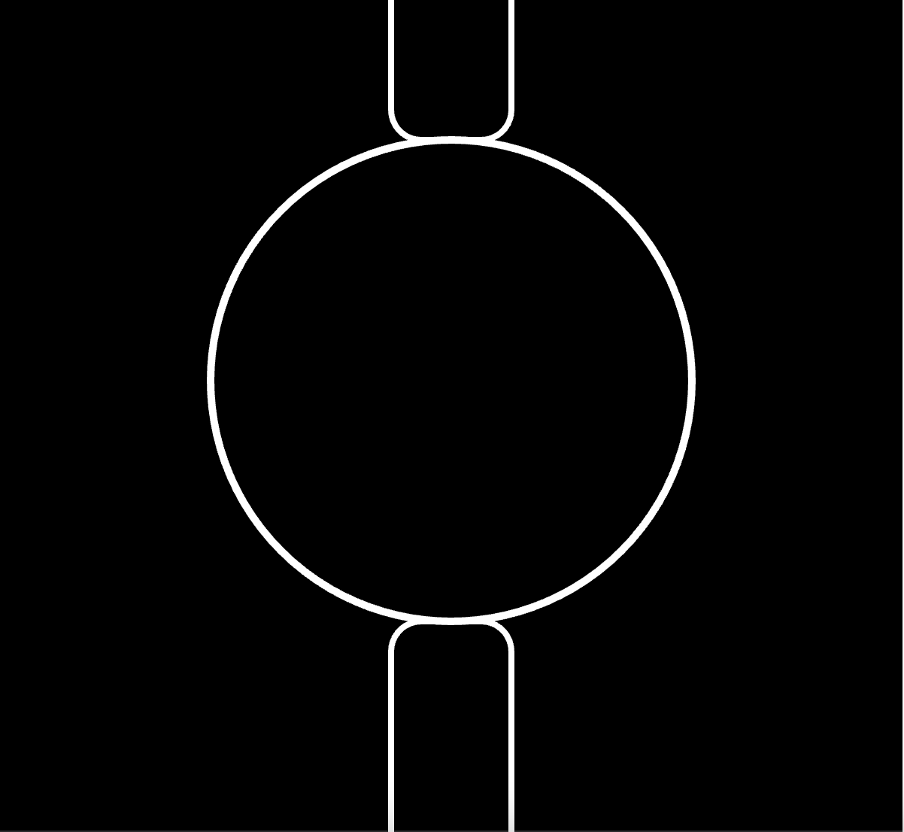
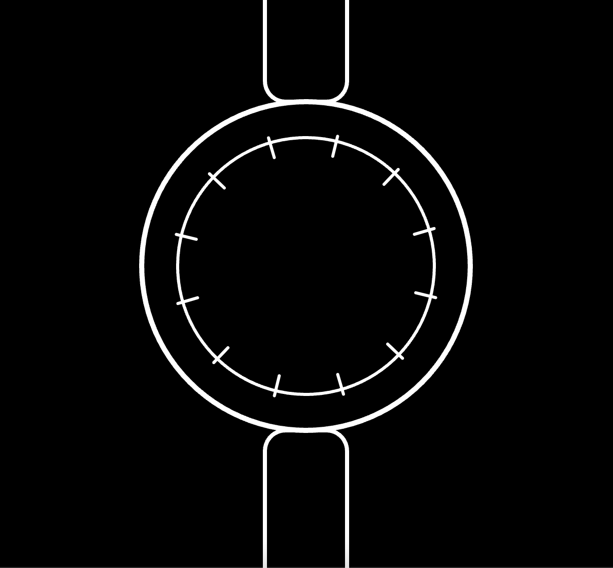
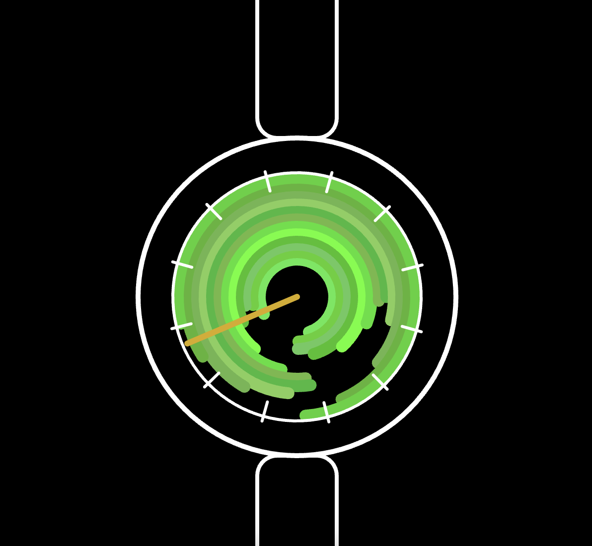
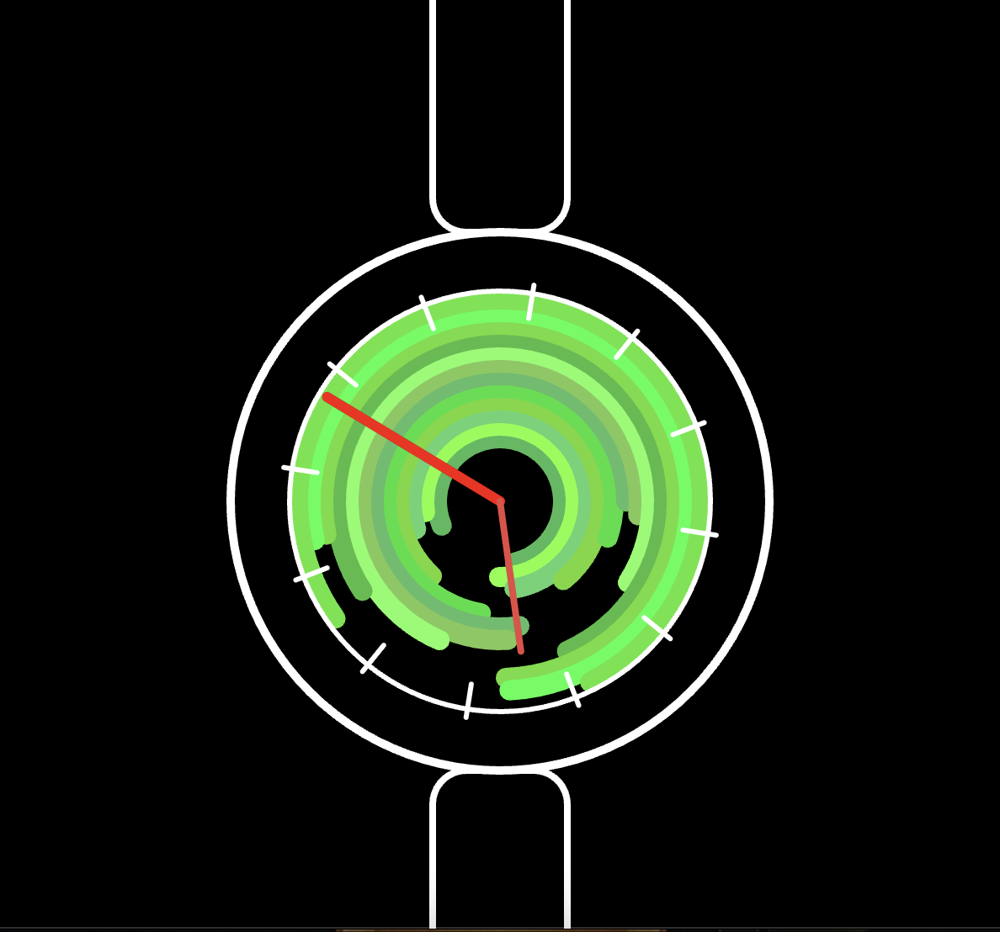
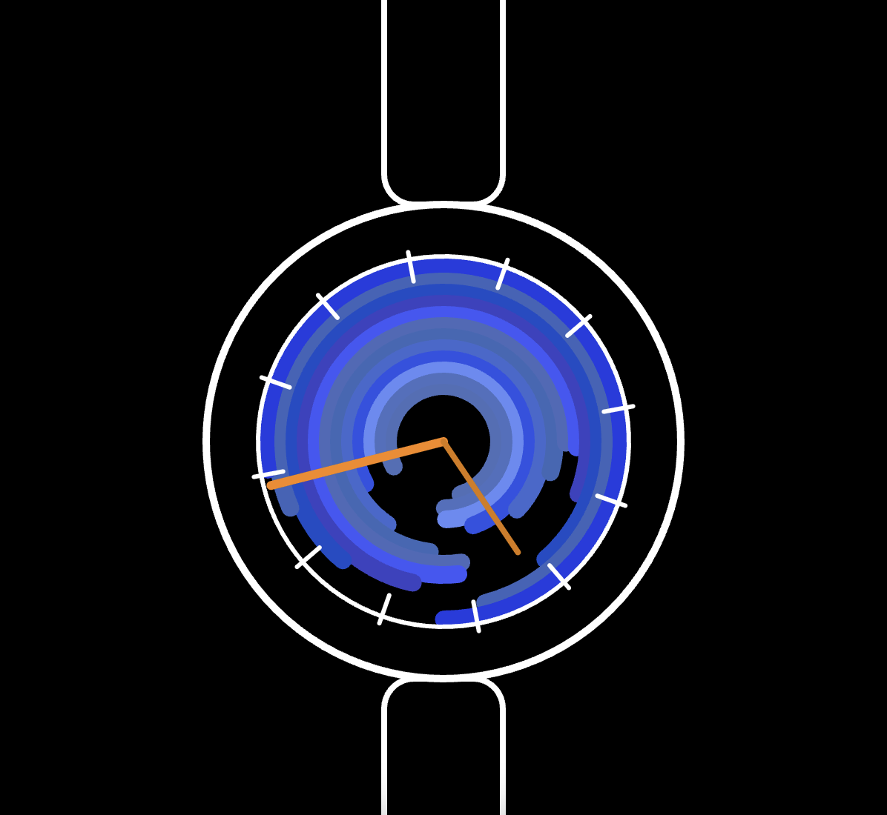

Time and Oscillation: Watch Sketch Documentation
Inspiration
Experiencing somewhat of a 'creative block' after hearing about the requirements of this assignment,
I approached my partner in hopes of spurring my creativity again. He is someone who is very passionate about watches,
and as soon as I remembered this, my creativity sparked again!
Watches naturally embody 'time', oscillation, and precision,
thus making it an ideal space for experimentation.
Overall, this project allowed me not only to further develop my p5.js coding skills
but also create something meaningful that I knew would make my partner proud!
Features
I wanted my sketch to include several key features:
- A watch shape composed of simple 2D geometric shapes (circles for the dial and rectangles for the straps).
- A gear wheel that rotates continuously, adding a sense of mechanical movement.
- A dynamic arc dial inspired by last week’s exercise, with the arcs fine-tuned in color. The arc dial changes colors (always within cool tones) both when the page is refreshed and when the second hand hits 12, and exhibits a subtle wobble for a more organic, lively feel.
- Two hands moving around the watch face at different speeds, representing minutes and seconds, with randomized warm colors for contrast.
Iterations

Iteration 1: I first worked on the basic watch shape.
It is composed of only simple 2D shapes: a circle for the watch dial and
2 rectangles for the straps.

Iteration 2: I then added a continously moving gear wheel.
The gear’s motion uses trigonometric functions (specifically the cos and sin functions) to calculate the positions
of the gear’s spokes around the circle to create a smooth, and circular rotation that mimics real watch mechanics.

Iteration 3: I then moved to the intial design of the arc background for the dial based on the code we learned last week.
The arcs use trigonometric functions to oscillate smoothly, and the colors are randomly assigned from cool tones (green, purple, and blue).

Iteration 4: Then came designing the longer hand. This hand rotates around the dial and is displayed in a random warm color (orange, yellow, and red)
that is reassigned each time the page is refreshed.

Iteration 5: I then added a shorter hand. This hand moves more slowly than the longer hand and is also randomly assigned a warm color
each time the page is refreshed.

Iteration 6: This iteration shows the final prototype where I experimented further with the arc dial features.
At this phase, the arc dial randomly changes to cool tones whenever the page is refreshed OR when the longer hand hits '12'.
Additionally, each time the longer hand hits '12', the arcs exhibit a subtle wobble effect, briefly turning white before it shifts to the next cool tone.
Final Prototype
This is my final watch prototype with all features implemented.